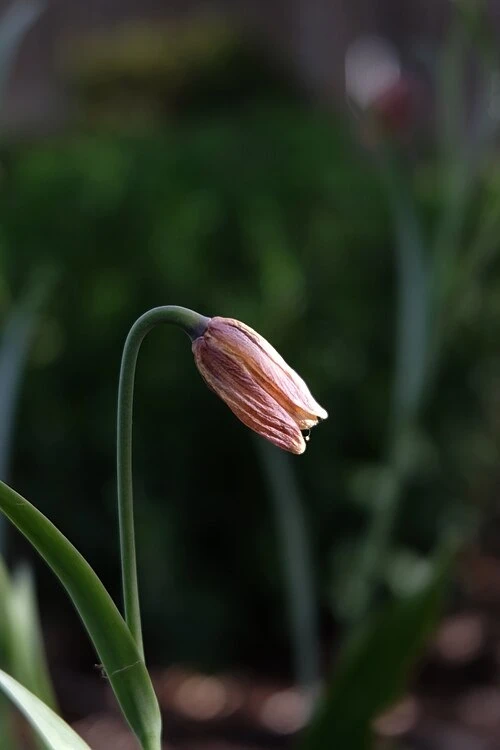

花梗下垂还是茎叶萎蔫？
照片的主体是下垂的花。茎是一条仍绿的弧，没有变褐，也没有在土面折断。

现场检查
沿弧从花颈摸到基部。只有花颈变软时，记在花上。基部变软、上部还硬时，才记在茎上。
鉴别相似表现
花谢后的干花也会垂，但茎常常仍是直的。这张照片里的茎是弯的，而且仍绿。
处理选择
基部已经湿软的茎，剪到还硬的位置并装袋带离。只是花头下垂、茎仍硬的，只去掉花。
后续复查
第二天再看这条弯茎有没有变成整段瘫软，弯折点有没有下移到土面。
寄主检查要点
球根花的花茎用这一条。木本枝条枯死不要拿这张花的照片去对照。
区分花梗自然下垂和失水萎蔫
有些花开放时本来就向下悬，不能按花头朝向决定补水。检查同株叶柄是否仍有支撑、叶面是否挺实、相邻花梗是否同样弯曲。若只有沉重花朵下方的一段平滑弯曲，先观察；若茎和叶一起失去支撑，再看根球内部水分和盆内积水情况。